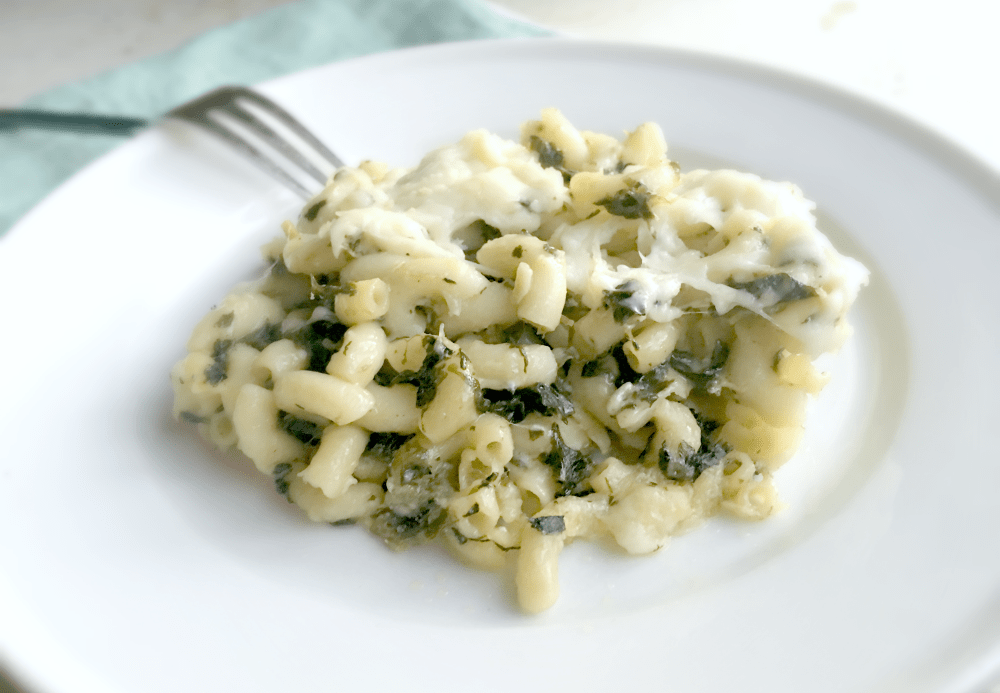

Creamy Garlic Parmesan Pasta with Spinach

Indulge in the comfort of a restaurant-worthy dish made right at home with this Creamy Garlic Parmesan Pasta with Spinach recipe. Velvety, garlic-infused cream sauce coats tender pasta strands, while the addition of fresh spinach adds a touch of vibrant color and a hint of healthiness. With minimal ingredients and straightforward steps, this delightful meal comes together effortlessly, making it a perfect option for busy weeknight dinners or whenever you're craving a comforting yet elegant dish.
Ingredients
- 8 oz (about 225g) of your favorite pasta
- 2 tablespoons butter
- 3 cloves garlic, minced
- 1 cup heavy cream
- 1 cup grated Parmesan cheese
- Salt and black pepper to taste
- 2 cups fresh spinach leaves
Preparation
- Cook the pasta according to the package instructions in a large pot of salted boiling water. Drain and set aside.
- In a large skillet, melt the butter over medium heat.
- Add the minced garlic to the skillet and sauté for about 1-2 minutes until fragrant. Be careful not to let it burn.
- Pour in the heavy cream and let it simmer gently for a few minutes, allowing it to thicken slightly.
- Gradually stir in the grated Parmesan cheese, allowing it to melt into the cream sauce. Continue stirring until the sauce is smooth and creamy.
- Season the sauce with salt and black pepper to taste. Keep in mind that the Parmesan is salty, so you might not need too much salt.
- Add the fresh spinach leaves to the skillet and stir until they wilt and incorporate into the creamy sauce.
- Add the cooked pasta to the skillet, tossing it to coat with the creamy garlic Parmesan sauce and mix in the spinach.
Your Creamy Garlic Parmesan Pasta with Spinach is now ready to be served. This dish brings together rich flavors and a velvety texture, making it a delightful experience for your taste buds. Enjoy the convenience of creating a gourmet meal in your own kitchen. Perfect for cozy evenings or impressing guests with minimal effort.